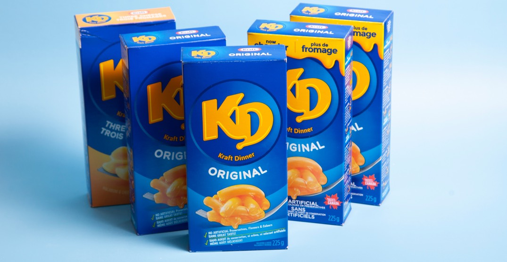

How to make Kraft Dinner

Learn how to make a simple
Kraft Dinner Mac n Cheese
.
Ingredients
- 1 box of Kraft Dinner maccaroni and cheese
- 1/3 of a cup of milk
- 1 tablespoon of butter
Instructions
For Microwave:
- Empty pasta into a 6 cup microwaveable bowl.
- Add 1-3/4 cups of HOT water and stir.
-
Microwave the bowl on high for 10 to 11 minutes, or until the water is
absorbed. Stir every 3 minutes.
-
Take the Kraft Dinner out of the microwave, and add in your milk and
butter.
- Mix Well, and Enjoy!
For Stove Top:
- Boil 6 cups of water.
- Add your pasta to the mix.
- Let the pasta cook for 7 to 9 minutes.
- Stir the mixture occasionally.
- When the mixture is done cooking, drain the mixture.
- Return the drained mixture to the original pan.
- Add in your butter, cheese powder and milk.
- Stir Well, and Enjoy!